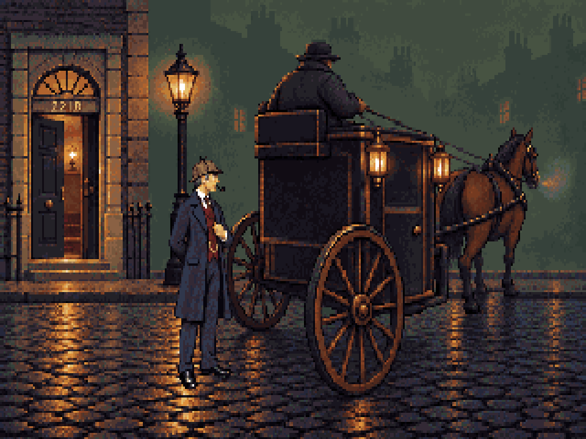

Level camera, horizon 0, full size at y176. The cab points diagonally away; its physical size is checked against the unchanged Holmes master.

Review candidate; no production registration. Final painted positions are measured separately from the initial Blender construction.
Notes and rebuild steps · Engine placements · Blender source · New menu and controls